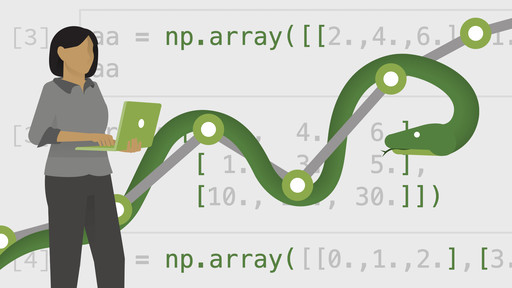
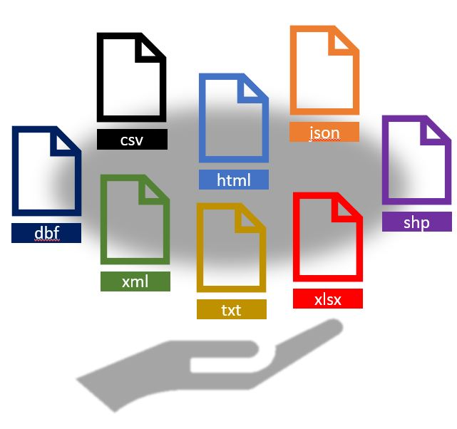

Capítulo 2 Introducción a Python
Python es un lenguaje de programación de alto nivel, interpretado y generalmente considerado como un lenguaje fácil de aprender y utilizar. Fue creado por Guido van Rossum y lanzado por primera vez en 1991. Python se destaca por su sintaxis clara y legible, lo que facilita la escritura y comprensión del código.

Python se ha vuelto extremadamente popular en el campo de la ciencia de datos por varias razones:
Facilidad de uso: Python se destaca por su sintaxis simple y legible, lo que facilita a los científicos de datos escribir, leer y mantener el código. Además, cuenta con una gran cantidad de bibliotecas y paquetes que facilitan tareas comunes en el análisis de datos.
Amplia comunidad y ecosistema: Cuenta con una gran comunidad de desarrolladores y científicos de datos que contribuyen con bibliotecas y paquetes de código abierto para realizar diversas tareas en ciencia de datos. Algunas de las bibliotecas más populares incluyen NumPy (para cálculos numéricos), pandas (para procesamiento de dataframes), matplotlib (para gráficos), scikit-learn (para machine learning) y TensorFlow (para deep learning).
Integración con otras tecnologías: Python se puede integrar fácilmente con otras tecnologías y lenguajes, lo que lo convierte en una opción versátil para la ciencia de datos. Por ejemplo, es común utilizar Python junto con bases de datos, herramientas de big data como Apache Spark, y lenguajes como R y SQL.
Flexibilidad: Python es un lenguaje flexible que se adapta a diferentes necesidades en ciencia de datos. Puede utilizarse tanto para realizar tareas simples como el procesamiento y limpieza de datos, como para desarrollar modelos de aprendizaje automático complejos y aplicaciones de inteligencia artificial.
Accesibilidad: Python es un lenguaje de programación open-source, lo que significa que es de uso gratuito y todos pueden contribuir a su desarrollo. Esto permite que toda la comunidad tiene acceso a los desarrollos y contribuciones de código publicado. En el ámbito empresarial y académico disminuye los costos de software.
Estas características hacen de Python una herramienta poderosa y popular para realizar análisis de datos, desarrollar modelos de aprendizaje automático y abordar una amplia gama de problemas en la ciencia de datos.
2.1 ¿Cómo obtener Python?
Python puede ser fácilmente descargado de forma gratuita desde el sitio oficial https://www.python.org/downloads/. Python está disponible para las plataformas Windows, Mac y Linux.
2.2 ¿Qué es RStudio?
RStudio es un Entorno de Desarrollo Integrado (IDE, por sus siglas en inglés) creado por Posit (antes Rstudio) para R y Python. Este permite y facilita el desarrollo y ejecución de sintaxis para código en R y python, incluye una consola y proporciona herramientas para la gestión del espacio de trabajo. RStudio está disponible para Windows, Mac y Linux o para navegadores conectados a RStudio Server o RStudio Server Pro.
Algunas de las principales características de Rstudio que lo hacen una gran herramienta para trabajar, son:
- Auto completado de código
- Sangría inteligente
- Resaltado de sintaxis
- Facilidad para definir funciones
- Soporte integrado
- Documentación integrada
- Administración de directorios y proyectos
- Visor de datos
- Depurador interactivo para corregir errores
- Conección con Rmarkwon y Sweave
La siguiente imagen muestra la forma en la que está estructurado RStudio. El orden de los páneles puede ser elegido por el usuario, así como las características de tipo de letra, tamaño y color de fondo, entre otras características.
Figure 2.1: Páneles de trabajo de Rstudio
2.3 Uso de python en Rstudio
library(reticulate)
install_python(list = TRUE)
use_python("C:/Program Files/Python310/python.exe")
#### Conda ####
# Creación de ambiente virtual de python 3.10 con conda
conda_create(envname = "conda_dsml_py3_10")
# Consultar la lista de ambientes creados
conda_list()
use_miniconda("conda_dsml_py3_10")
# instalar pandas
conda_install("conda_dsml_py3_10", "pandas")
pandas <- import("pandas")
#### VirtualEnv ####
# Creación de ambiente virtual de python 3.10 con virtualenv
virtualenv_create(envname = "venv_dsml_py3_10")
virtualenv_list()
use_virtualenv("venv_dsml_py3_10")
# install pandas
virtualenv_install("venv_dsml_py3_10", "pandas")2.4 Lectura de datos
El primer paso para analizar datos es incorporarlos a la sesión de python para que puedan ser manipulados y observados. Existen múltiples librerías y funciones que permiten leer la información proveniente de un archivo externo, el cual puede tener una de muchas posibles extensiones.
Usualmente, no creamos los datos desde la sesión, sino que a través de un archivo externo se realiza la lectura de datos escritos en un archivo. Los más comúnes son:

La paquetería pandas fue desarrollada recientemente para lidiar con la lectura de archivos rápidamente. Esta paquetería proporciona funciones que suelen ser mucho más rápidas que las funciones base que proporciona python.
2.4.1 Archivos csv
A la hora de importar conjuntos de datos en python, uno de los formatos más habituales en los que hallamos información es en archivos separados por comas (comma separated values), cuya extensión suele ser .csv. En ellos encontramos múltiples líneas que recogen la tabla de interés, y en las cuales los valores aparecen, de manera consecutiva, separados por el carácter ,.
Para importar este tipo de archivos en nuestra sesión de python, se utiliza la función read_csv().
El único argumento que debemos de pasar a esta función de manera obligatoria, es file, el nombre o la ruta completa del archivo que pretendemos importar.
La paquetería pandas fue desarrollada para lidiar con la lectura de archivos grandes rápidamente.
Veamos un ejemplo:
## <class 'pandas.core.frame.DataFrame'>
## RangeIndex: 2930 entries, 0 to 2929
## Data columns (total 74 columns):
## # Column Non-Null Count Dtype
## --- ------ -------------- -----
## 0 MS_SubClass 2930 non-null object
## 1 MS_Zoning 2930 non-null object
## 2 Lot_Frontage 2930 non-null int64
## 3 Lot_Area 2930 non-null int64
## 4 Street 2930 non-null object
## 5 Alley 2930 non-null object
## 6 Lot_Shape 2930 non-null object
## 7 Land_Contour 2930 non-null object
## 8 Utilities 2930 non-null object
## 9 Lot_Config 2930 non-null object
## 10 Land_Slope 2930 non-null object
## 11 Neighborhood 2930 non-null object
## 12 Condition_1 2930 non-null object
## 13 Condition_2 2930 non-null object
## 14 Bldg_Type 2930 non-null object
## 15 House_Style 2930 non-null object
## 16 Overall_Cond 2930 non-null object
## 17 Year_Built 2930 non-null int64
## 18 Year_Remod_Add 2930 non-null int64
## 19 Roof_Style 2930 non-null object
## 20 Roof_Matl 2930 non-null object
## 21 Exterior_1st 2930 non-null object
## 22 Exterior_2nd 2930 non-null object
## 23 Mas_Vnr_Type 1155 non-null object
## 24 Mas_Vnr_Area 2930 non-null int64
## 25 Exter_Cond 2930 non-null object
## 26 Foundation 2930 non-null object
## 27 Bsmt_Cond 2930 non-null object
## 28 Bsmt_Exposure 2930 non-null object
## 29 BsmtFin_Type_1 2930 non-null object
## 30 BsmtFin_SF_1 2930 non-null int64
## 31 BsmtFin_Type_2 2930 non-null object
## 32 BsmtFin_SF_2 2930 non-null int64
## 33 Bsmt_Unf_SF 2930 non-null int64
## 34 Total_Bsmt_SF 2930 non-null int64
## 35 Heating 2930 non-null object
## 36 Heating_QC 2930 non-null object
## 37 Central_Air 2930 non-null object
## 38 Electrical 2930 non-null object
## 39 First_Flr_SF 2930 non-null int64
## 40 Second_Flr_SF 2930 non-null int64
## 41 Gr_Liv_Area 2930 non-null int64
## 42 Bsmt_Full_Bath 2930 non-null int64
## 43 Bsmt_Half_Bath 2930 non-null int64
## 44 Full_Bath 2930 non-null int64
## 45 Half_Bath 2930 non-null int64
## 46 Bedroom_AbvGr 2930 non-null int64
## 47 Kitchen_AbvGr 2930 non-null int64
## 48 TotRms_AbvGrd 2930 non-null int64
## 49 Functional 2930 non-null object
## 50 Fireplaces 2930 non-null int64
## 51 Garage_Type 2930 non-null object
## 52 Garage_Finish 2930 non-null object
## 53 Garage_Cars 2930 non-null int64
## 54 Garage_Area 2930 non-null int64
## 55 Garage_Cond 2930 non-null object
## 56 Paved_Drive 2930 non-null object
## 57 Wood_Deck_SF 2930 non-null int64
## 58 Open_Porch_SF 2930 non-null int64
## 59 Enclosed_Porch 2930 non-null int64
## 60 Three_season_porch 2930 non-null int64
## 61 Screen_Porch 2930 non-null int64
## 62 Pool_Area 2930 non-null int64
## 63 Pool_QC 2930 non-null object
## 64 Fence 2930 non-null object
## 65 Misc_Feature 106 non-null object
## 66 Misc_Val 2930 non-null int64
## 67 Mo_Sold 2930 non-null int64
## 68 Year_Sold 2930 non-null int64
## 69 Sale_Type 2930 non-null object
## 70 Sale_Condition 2930 non-null object
## 71 Sale_Price 2930 non-null int64
## 72 Longitude 2930 non-null float64
## 73 Latitude 2930 non-null float64
## dtypes: float64(2), int64(32), object(40)
## memory usage: 1.7+ MB## MS_SubClass MS_Zoning \
## 0 One_Story_1946_and_Newer_All_Styles Residential_Low_Density
## 1 One_Story_1946_and_Newer_All_Styles Residential_High_Density
## 2 One_Story_1946_and_Newer_All_Styles Residential_Low_Density
## 3 One_Story_1946_and_Newer_All_Styles Residential_Low_Density
## 4 Two_Story_1946_and_Newer Residential_Low_Density
##
## Lot_Frontage ... Sale_Price Longitude Latitude
## 0 141 ... 215000 -93.619754 42.054035
## 1 80 ... 105000 -93.619756 42.053014
## 2 81 ... 172000 -93.619387 42.052659
## 3 93 ... 244000 -93.617320 42.051245
## 4 74 ... 189900 -93.638933 42.060899
##
## [5 rows x 74 columns]## Lot_Frontage Lot_Area Year_Built ... Sale_Price \
## count 2930.000000 2930.000000 2930.000000 ... 2930.000000
## mean 57.647782 10147.921843 1971.356314 ... 180796.060068
## std 33.499441 7880.017759 30.245361 ... 79886.692357
## min 0.000000 1300.000000 1872.000000 ... 12789.000000
## 25% 43.000000 7440.250000 1954.000000 ... 129500.000000
## 50% 63.000000 9436.500000 1973.000000 ... 160000.000000
## 75% 78.000000 11555.250000 2001.000000 ... 213500.000000
## max 313.000000 215245.000000 2010.000000 ... 755000.000000
##
## Longitude Latitude
## count 2930.000000 2930.000000
## mean -93.642897 42.034482
## std 0.025700 0.018410
## min -93.693153 41.986498
## 25% -93.660217 42.022088
## 50% -93.641806 42.034662
## 75% -93.622113 42.049853
## max -93.577427 42.063388
##
## [8 rows x 34 columns]La base de datos llamada AmesHousing contiene un conjunto de datos con información de la Oficina del Tasador de Ames utilizada para calcular los valores tasados para las propiedades residenciales individuales vendidas en Ames, Iowa, de 2006 a 2010. FUENTES: Ames, Oficina del Tasador de Iowa.
Pueden descargar los datos para la clase aquí
¿Y si el archivo que necesitamos leer está en excel?
2.4.2 Archivos txt
Uno de los archivos más comunes es el .txt. La librería pandas también cuenta con parámetros en la función read_csv que permiten leer fácilmente los datos contenidos en formato tabular.
## MS_SubClass MS_Zoning \
## 0 One_Story_1946_and_Newer_All_Styles Residential_Low_Density
## 1 One_Story_1946_and_Newer_All_Styles Residential_High_Density
## 2 One_Story_1946_and_Newer_All_Styles Residential_Low_Density
##
## Lot_Frontage ... Sale_Price Longitude Latitude
## 0 141 ... 215000 -93.619754 42.054035
## 1 80 ... 105000 -93.619756 42.053014
## 2 81 ... 172000 -93.619387 42.052659
##
## [3 rows x 74 columns]La función read_csv() funciona para leer archivos con diferentes delimitadores posibles, es decir, es posible especificar si las columnas están separadas por espacios, comas, punto y coma, tabulador o algún otro delimitador (““,”,“,”;“,”, “@”).
Adicionalmente, se puede especificar si el archivo contiene encabezado, si existen renglones a saltar, codificación, tipo de variable y muchas más opciones. Todos estos detalles pueden consultarse en la documentación oficial.
2.4.3 Archivos xls y xlsx
La paquetería pandas facilita la obtención de datos tabulares de archivos de Excel. Admite tanto el formato .xls heredado como el formato .xlsx moderno basado en XML. Es importante mencionar que es necesario instalar una dependencia para que funcione. Se requiere de la librería openpyxl
## MS_SubClass MS_Zoning \
## 0 One_Story_1946_and_Newer_All_Styles Residential_Low_Density
## 1 One_Story_1946_and_Newer_All_Styles Residential_High_Density
## 2 One_Story_1946_and_Newer_All_Styles Residential_Low_Density
##
## Lot_Frontage ... Sale_Price Longitude Latitude
## 0 141 ... 215000 -93.619754 42.054035
## 1 80 ... 105000 -93.619756 42.053014
## 2 81 ... 172000 -93.619387 42.052659
##
## [3 rows x 74 columns]2.4.4 Archivos pickle
Un tipo de archivo que resulta de particular interés, es el .pkl. Este archivo comprime cualquier objeto o resultado que sea usado o producido en python. Uno puede almacenar el objeto de interés de la siguiente manera:
Puede observarse que en el explorador de archivos se encuentra ahora el nuevo archivo con extensión .pkl, el cual puede ser posteriormente incorporado a una sesión de python para seguir trabajando con él.
## MS_SubClass MS_Zoning \
## 0 One_Story_1946_and_Newer_All_Styles Residential_Low_Density
## 1 One_Story_1946_and_Newer_All_Styles Residential_High_Density
## 2 One_Story_1946_and_Newer_All_Styles Residential_Low_Density
##
## Lot_Frontage ... Sale_Price Longitude Latitude
## 0 141 ... 215000 -93.619754 42.054035
## 1 80 ... 105000 -93.619756 42.053014
## 2 81 ... 172000 -93.619387 42.052659
##
## [3 rows x 74 columns]Algunas de las grandes ventajas que tiene almacenar los archivos en formato pickle, son las siguientes:
No es necesario volver a ejecutar procesos largos cuando ya se ha logrado realizar una vez.
El tiempo de lectura de la información es considerablemente más rápido.
2.5 Consultas de datos
Python hoy en día es el lenguaje de programación más popular, sin embargo otros lenguajes aún mantienen ventajas al haber desarrollado librerías muy especializadas y limpias para trabajar. Esto no significa que todo esté perdido para python, pues algunos desarrolladores están tratando de emular las funciones que existen en otros lenguajes y que han sido ampliamente adoptados por la comunidad.
En R, existe un conjunto de librerías llamado TIDYVERSE que sirve extraordinariamente para transformar y manipular datos. Aunque en python también se puede hacer con pandas, encontramos muy atractivo aprender funciones que se usan de igual manera en varios lenguajes de programación. La librería en python que simula a dplyr de tidyverse se conoce como siuba
El paquete siuba proporciona un conjunto de funciones muy útiles para manipular dataframes y así reducir el número de repeticiones, la probabilidad de cometer errores y el número de caracteres que hay que escribir. Como valor extra, podemos encontrar que la gramática de siuba es más fácil de entender.
Revisaremos algunas de sus funciones más usadas (verbos), así como el uso de pipes (>>) para combinarlas.
select()
filter()
arrange()
mutate()
summarise()
join()
group_by()
Primero tenemos que instalar y cargar la paquetería:
Usaremos el dataset AmesHousing que se proporcionó en el capítulo anterior (el alumno puede hacer el ejercicio con datos propios, si así lo desea)
## <class 'pandas.core.frame.DataFrame'>
## RangeIndex: 2930 entries, 0 to 2929
## Data columns (total 74 columns):
## # Column Non-Null Count Dtype
## --- ------ -------------- -----
## 0 MS_SubClass 2930 non-null object
## 1 MS_Zoning 2930 non-null object
## 2 Lot_Frontage 2930 non-null int64
## 3 Lot_Area 2930 non-null int64
## 4 Street 2930 non-null object
## 5 Alley 2930 non-null object
## 6 Lot_Shape 2930 non-null object
## 7 Land_Contour 2930 non-null object
## 8 Utilities 2930 non-null object
## 9 Lot_Config 2930 non-null object
## 10 Land_Slope 2930 non-null object
## 11 Neighborhood 2930 non-null object
## 12 Condition_1 2930 non-null object
## 13 Condition_2 2930 non-null object
## 14 Bldg_Type 2930 non-null object
## 15 House_Style 2930 non-null object
## 16 Overall_Cond 2930 non-null object
## 17 Year_Built 2930 non-null int64
## 18 Year_Remod_Add 2930 non-null int64
## 19 Roof_Style 2930 non-null object
## 20 Roof_Matl 2930 non-null object
## 21 Exterior_1st 2930 non-null object
## 22 Exterior_2nd 2930 non-null object
## 23 Mas_Vnr_Type 1155 non-null object
## 24 Mas_Vnr_Area 2930 non-null int64
## 25 Exter_Cond 2930 non-null object
## 26 Foundation 2930 non-null object
## 27 Bsmt_Cond 2930 non-null object
## 28 Bsmt_Exposure 2930 non-null object
## 29 BsmtFin_Type_1 2930 non-null object
## 30 BsmtFin_SF_1 2930 non-null int64
## 31 BsmtFin_Type_2 2930 non-null object
## 32 BsmtFin_SF_2 2930 non-null int64
## 33 Bsmt_Unf_SF 2930 non-null int64
## 34 Total_Bsmt_SF 2930 non-null int64
## 35 Heating 2930 non-null object
## 36 Heating_QC 2930 non-null object
## 37 Central_Air 2930 non-null object
## 38 Electrical 2930 non-null object
## 39 First_Flr_SF 2930 non-null int64
## 40 Second_Flr_SF 2930 non-null int64
## 41 Gr_Liv_Area 2930 non-null int64
## 42 Bsmt_Full_Bath 2930 non-null int64
## 43 Bsmt_Half_Bath 2930 non-null int64
## 44 Full_Bath 2930 non-null int64
## 45 Half_Bath 2930 non-null int64
## 46 Bedroom_AbvGr 2930 non-null int64
## 47 Kitchen_AbvGr 2930 non-null int64
## 48 TotRms_AbvGrd 2930 non-null int64
## 49 Functional 2930 non-null object
## 50 Fireplaces 2930 non-null int64
## 51 Garage_Type 2930 non-null object
## 52 Garage_Finish 2930 non-null object
## 53 Garage_Cars 2930 non-null int64
## 54 Garage_Area 2930 non-null int64
## 55 Garage_Cond 2930 non-null object
## 56 Paved_Drive 2930 non-null object
## 57 Wood_Deck_SF 2930 non-null int64
## 58 Open_Porch_SF 2930 non-null int64
## 59 Enclosed_Porch 2930 non-null int64
## 60 Three_season_porch 2930 non-null int64
## 61 Screen_Porch 2930 non-null int64
## 62 Pool_Area 2930 non-null int64
## 63 Pool_QC 2930 non-null object
## 64 Fence 2930 non-null object
## 65 Misc_Feature 106 non-null object
## 66 Misc_Val 2930 non-null int64
## 67 Mo_Sold 2930 non-null int64
## 68 Year_Sold 2930 non-null int64
## 69 Sale_Type 2930 non-null object
## 70 Sale_Condition 2930 non-null object
## 71 Sale_Price 2930 non-null int64
## 72 Longitude 2930 non-null float64
## 73 Latitude 2930 non-null float64
## dtypes: float64(2), int64(32), object(40)
## memory usage: 1.7+ MB## Lot_Frontage Lot_Area Year_Built ... Sale_Price \
## count 2930.000000 2930.000000 2930.000000 ... 2930.000000
## mean 57.647782 10147.921843 1971.356314 ... 180796.060068
## std 33.499441 7880.017759 30.245361 ... 79886.692357
## min 0.000000 1300.000000 1872.000000 ... 12789.000000
## 25% 43.000000 7440.250000 1954.000000 ... 129500.000000
## 50% 63.000000 9436.500000 1973.000000 ... 160000.000000
## 75% 78.000000 11555.250000 2001.000000 ... 213500.000000
## max 313.000000 215245.000000 2010.000000 ... 755000.000000
##
## Longitude Latitude
## count 2930.000000 2930.000000
## mean -93.642897 42.034482
## std 0.025700 0.018410
## min -93.693153 41.986498
## 25% -93.660217 42.022088
## 50% -93.641806 42.034662
## 75% -93.622113 42.049853
## max -93.577427 42.063388
##
## [8 rows x 34 columns]2.5.1 Seleccionar columnas
Observamos que nuestros datos tienen 2,930 observaciones y 74 variables, con select() podemos seleccionar las variables que se indiquen.
## Lot_Area Neighborhood Year_Sold Sale_Price
## 0 31770 North_Ames 2010 215000
## 1 11622 North_Ames 2010 105000
## 2 14267 North_Ames 2010 172000
## 3 11160 North_Ames 2010 244000
## 4 13830 Gilbert 2010 189900
## ... ... ... ... ...
## 2925 7937 Mitchell 2006 142500
## 2926 8885 Mitchell 2006 131000
## 2927 10441 Mitchell 2006 132000
## 2928 10010 Mitchell 2006 170000
## 2929 9627 Mitchell 2006 188000
##
## [2930 rows x 4 columns]¡¡ RECORDAR !!
El operador pipe (>>) se usa para conectar un elemento con una función o acción a realizar. En este caso solo se indica que en los datos de ames se seleccionan 4 variables.
Al operador ’_.’ se le conoce como siu-expresion. Es muy útil para hacer referencia a una columna que se encuentra dentro del conjunto de datos que se encuentra operando.
Para que el operador >> ejecute todo el pipeline es importante envolverlo entre paréntesis.
Con select() y contains() podemos seleccionar variables con alguna cadena de texto.
## Lot_Area Mas_Vnr_Area Gr_Liv_Area Garage_Area Pool_Area
## 0 31770 112 1656 528 0
## 1 11622 0 896 730 0
## 2 14267 108 1329 312 0
## 3 11160 0 2110 522 0
## 4 13830 0 1629 482 0
## ... ... ... ... ... ...
## 2925 7937 0 1003 588 0
## 2926 8885 0 902 484 0
## 2927 10441 0 970 0 0
## 2928 10010 0 1389 418 0
## 2929 9627 94 2000 650 0
##
## [2930 rows x 5 columns]De igual manera, con select(), contains() podemos seleccionar que inicien o terminen con alguna cadena de texto.
## Garage_Type Garage_Finish Garage_Cars Garage_Area Garage_Cond
## 0 Attchd Fin 2 528 Typical
## 1 Attchd Unf 1 730 Typical
## 2 Attchd Unf 1 312 Typical
## 3 Attchd Fin 2 522 Typical
## 4 Attchd Fin 2 482 Typical
## ... ... ... ... ... ...
## 2925 Detchd Unf 2 588 Typical
## 2926 Attchd Unf 2 484 Typical
## 2927 No_Garage No_Garage 0 0 No_Garage
## 2928 Attchd RFn 2 418 Typical
## 2929 Attchd Fin 3 650 Typical
##
## [2930 rows x 5 columns]## Lot_Area Mas_Vnr_Area Gr_Liv_Area Garage_Area Pool_Area
## 0 31770 112 1656 528 0
## 1 11622 0 896 730 0
## 2 14267 108 1329 312 0
## 3 11160 0 2110 522 0
## 4 13830 0 1629 482 0
## ... ... ... ... ... ...
## 2925 7937 0 1003 588 0
## 2926 8885 0 902 484 0
## 2927 10441 0 970 0 0
## 2928 10010 0 1389 418 0
## 2929 9627 94 2000 650 0
##
## [2930 rows x 5 columns]2.5.2 Filtrar observaciones
La función filter() nos permite filtrar filas según una condición, primero notemos que la variable Sale_Condition tiene distintas categorías.
## Sale_Condition
## Normal 2413
## Partial 245
## Abnorml 190
## Family 46
## Alloca 24
## AdjLand 12
## Name: count, dtype: int64¡¡ SPOILER !!
En un modelo predictivo de Machine Learning, no es correcto agregar columnas cuyo valor es conocido hasta el momento de la observación. Es decir, no deben agregarse variables que no se conozca su valor al momento de la predicción, como es el caso de condición de venta.
Ahora usaremos la función filter para quedarnos solo con las observaciones con condición de venta “normal”.
## MS_SubClass MS_Zoning \
## 0 One_Story_1946_and_Newer_All_Styles Residential_Low_Density
## 1 One_Story_1946_and_Newer_All_Styles Residential_High_Density
## 2 One_Story_1946_and_Newer_All_Styles Residential_Low_Density
## 3 One_Story_1946_and_Newer_All_Styles Residential_Low_Density
## 4 Two_Story_1946_and_Newer Residential_Low_Density
## ... ... ...
## 2925 Split_or_Multilevel Residential_Low_Density
## 2926 One_Story_1946_and_Newer_All_Styles Residential_Low_Density
## 2927 Split_Foyer Residential_Low_Density
## 2928 One_Story_1946_and_Newer_All_Styles Residential_Low_Density
## 2929 Two_Story_1946_and_Newer Residential_Low_Density
##
## Lot_Frontage ... Sale_Price Longitude Latitude
## 0 141 ... 215000 -93.619754 42.054035
## 1 80 ... 105000 -93.619756 42.053014
## 2 81 ... 172000 -93.619387 42.052659
## 3 93 ... 244000 -93.617320 42.051245
## 4 74 ... 189900 -93.638933 42.060899
## ... ... ... ... ... ...
## 2925 37 ... 142500 -93.604776 41.988964
## 2926 0 ... 131000 -93.602680 41.988314
## 2927 62 ... 132000 -93.606847 41.986510
## 2928 77 ... 170000 -93.600190 41.990921
## 2929 74 ... 188000 -93.599996 41.989265
##
## [2413 rows x 74 columns]También se puede usar para filtrar variables numéricas:
## MS_SubClass MS_Zoning \
## 0 One_Story_1946_and_Newer_All_Styles Residential_Low_Density
## 2 One_Story_1946_and_Newer_All_Styles Residential_Low_Density
## 3 One_Story_1946_and_Newer_All_Styles Residential_Low_Density
## 4 Two_Story_1946_and_Newer Residential_Low_Density
## 5 Two_Story_1946_and_Newer Residential_Low_Density
## ... ... ...
## 2921 Duplex_All_Styles_and_Ages Residential_Low_Density
## 2922 Duplex_All_Styles_and_Ages Residential_Low_Density
## 2923 One_Story_1946_and_Newer_All_Styles Residential_Low_Density
## 2928 One_Story_1946_and_Newer_All_Styles Residential_Low_Density
## 2929 Two_Story_1946_and_Newer Residential_Low_Density
##
## Lot_Frontage ... Sale_Price Longitude Latitude
## 0 141 ... 215000 -93.619754 42.054035
## 2 81 ... 172000 -93.619387 42.052659
## 3 93 ... 244000 -93.617320 42.051245
## 4 74 ... 189900 -93.638933 42.060899
## 5 78 ... 195500 -93.638925 42.060779
## ... ... ... ... ... ...
## 2921 55 ... 150900 -93.604475 41.990043
## 2922 63 ... 188000 -93.603534 41.990134
## 2923 80 ... 160000 -93.608688 41.988737
## 2928 77 ... 170000 -93.600190 41.990921
## 2929 74 ... 188000 -93.599996 41.989265
##
## [1677 rows x 74 columns]Notemos que en el ejemplo anterior se usa &, que ayuda a filtrar por dos condiciones.
También puede usarse | para filtrar por alguna de las dos condiciones.
## MS_SubClass MS_Zoning \
## 1 One_Story_1946_and_Newer_All_Styles Residential_High_Density
## 18 One_Story_1946_and_Newer_All_Styles Residential_Low_Density
## 23 One_Story_1946_and_Newer_All_Styles Residential_Low_Density
## 24 One_Story_1946_and_Newer_All_Styles Residential_Low_Density
## 25 One_Story_1946_and_Newer_All_Styles Residential_Low_Density
## ... ... ...
## 2920 Two_Story_PUD_1946_and_Newer Residential_Medium_Density
## 2924 One_Story_1946_and_Newer_All_Styles Residential_Low_Density
## 2925 Split_or_Multilevel Residential_Low_Density
## 2926 One_Story_1946_and_Newer_All_Styles Residential_Low_Density
## 2927 Split_Foyer Residential_Low_Density
##
## Lot_Frontage ... Sale_Price Longitude Latitude
## 1 80 ... 105000 -93.619756 42.053014
## 18 140 ... 141000 -93.622971 42.056673
## 23 0 ... 149000 -93.626231 42.055147
## 24 0 ... 149900 -93.626537 42.054592
## 25 65 ... 142000 -93.628806 42.055227
## ... ... ... ... ... ...
## 2920 21 ... 71000 -93.602345 41.991532
## 2924 160 ... 131000 -93.606842 41.987686
## 2925 37 ... 142500 -93.604776 41.988964
## 2926 0 ... 131000 -93.602680 41.988314
## 2927 62 ... 132000 -93.606847 41.986510
##
## [1271 rows x 74 columns]Las condiciones pueden ser expresiones lógicas construidas mediante los operadores relacionales y lógicos:
< : Menor que
> : Mayor que
== : Igual que
<= : Menor o igual que
>= : Mayor o igual que
!= : Diferente que
isin : Pertenece al conjunto
isnull : Es NA
EJERCICIO:
Practicar la función de filtro de observaciones usando los operadores auxiliares.
Concatenar el resultado de seleccionar columnas y posteriormente filtrar columnas.
2.5.3 Ordenar registros
La función arrange() se utiliza para ordenar las filas de un data frame de acuerdo a una o varias variables. Este ordenamiento puede ser ascendente o descendente.
Por defecto arrange() ordena las filas por orden ascendente:
## MS_SubClass MS_Zoning \
## 181 One_Story_1945_and_Older Residential_Medium_Density
## 1553 One_Story_1946_and_Newer_All_Styles A_agr
## 726 One_Story_1945_and_Older C_all
## 2843 One_Story_1945_and_Older Residential_Low_Density
## 2880 One_Story_1946_and_Newer_All_Styles C_all
## ... ... ...
## 44 One_Story_1946_and_Newer_All_Styles Residential_Low_Density
## 1063 One_Story_1946_and_Newer_All_Styles Residential_Low_Density
## 2445 Two_Story_1946_and_Newer Residential_Low_Density
## 1760 Two_Story_1946_and_Newer Residential_Low_Density
## 1767 Two_Story_1946_and_Newer Residential_Low_Density
##
## Lot_Frontage ... Sale_Price Longitude Latitude
## 181 68 ... 12789 -93.606789 42.030388
## 1553 80 ... 13100 -93.625217 42.018806
## 726 60 ... 34900 -93.605207 42.023218
## 2843 60 ... 35000 -93.659043 42.021559
## 2880 50 ... 35311 -93.615012 42.019099
## ... ... ... ... ... ...
## 44 100 ... 611657 -93.655051 42.059617
## 1063 106 ... 615000 -93.656958 42.058484
## 2445 118 ... 625000 -93.657851 42.053314
## 1760 160 ... 745000 -93.657592 42.053321
## 1767 104 ... 755000 -93.657271 42.051980
##
## [2930 rows x 74 columns]
Si las queremos ordenar de forma ascendente, lo haremos del siguiente modo:
## MS_SubClass MS_Zoning \
## 1767 Two_Story_1946_and_Newer Residential_Low_Density
## 1760 Two_Story_1946_and_Newer Residential_Low_Density
## 2445 Two_Story_1946_and_Newer Residential_Low_Density
## 1063 One_Story_1946_and_Newer_All_Styles Residential_Low_Density
## 44 One_Story_1946_and_Newer_All_Styles Residential_Low_Density
## ... ... ...
## 2880 One_Story_1946_and_Newer_All_Styles C_all
## 2843 One_Story_1945_and_Older Residential_Low_Density
## 726 One_Story_1945_and_Older C_all
## 1553 One_Story_1946_and_Newer_All_Styles A_agr
## 181 One_Story_1945_and_Older Residential_Medium_Density
##
## Lot_Frontage ... Sale_Price Longitude Latitude
## 1767 104 ... 755000 -93.657271 42.051980
## 1760 160 ... 745000 -93.657592 42.053321
## 2445 118 ... 625000 -93.657851 42.053314
## 1063 106 ... 615000 -93.656958 42.058484
## 44 100 ... 611657 -93.655051 42.059617
## ... ... ... ... ... ...
## 2880 50 ... 35311 -93.615012 42.019099
## 2843 60 ... 35000 -93.659043 42.021559
## 726 60 ... 34900 -93.605207 42.023218
## 1553 80 ... 13100 -93.625217 42.018806
## 181 68 ... 12789 -93.606789 42.030388
##
## [2930 rows x 74 columns]Si se desea usar dos o más columnas para realizar el ordenamiento, deben separarse por comas cada una de las características
(
ames_housing >>
arrange(_.Sale_Condition, -_.Sale_Price, _.Lot_Area) >>
select(_.Sale_Condition, _.Sale_Price, _.Lot_Area)
)## Sale_Condition Sale_Price Lot_Area
## 1760 Abnorml 745000 15623
## 456 Abnorml 552000 14836
## 1425 Abnorml 475000 11778
## 1058 Abnorml 390000 13418
## 1171 Abnorml 328900 5119
## ... ... ... ...
## 2826 Partial 140000 3675
## 2472 Partial 132000 13072
## 1996 Partial 124500 3600
## 1299 Partial 115000 6000
## 712 Partial 113000 4456
##
## [2930 rows x 3 columns]Notemos que en el ejemplo anterior usamos dos pipes (>>), como habíamos mencionado se pueden usar los necesarios para combinar funciones.
2.5.4 Agregar / Modificar
Con la función mutate() podemos computar transformaciones de variables en un data frame. A menudo, tendremos la necesidad de crear nuevas variables que se calculan a partir de variables existentes. La función mutate() proporciona una interfaz clara para realizar este tipo de operaciones.
Por ejemplo, haremos el cálculo de la antigüedad del inmueble a partir de las variables Year_Sold y Year_Remod_Add:
ejemplo_mutate = (
ames_housing >>
select(_.Year_Sold, _.Year_Remod_Add) >>
mutate(Antique = _.Year_Sold - _.Year_Remod_Add)
)
ejemplo_mutate## Year_Sold Year_Remod_Add Antique
## 0 2010 1960 50
## 1 2010 1961 49
## 2 2010 1958 52
## 3 2010 1968 42
## 4 2010 1998 12
## ... ... ... ...
## 2925 2006 1984 22
## 2926 2006 1983 23
## 2927 2006 1992 14
## 2928 2006 1975 31
## 2929 2006 1994 12
##
## [2930 rows x 3 columns]El ejemplo anterior crea una nueva variable. Ahora se presenta otro ejemplo en donde se modifica una variable ya creada.
## Year_Sold Year_Remod_Add Antique
## 0 2010 1960 600
## 1 2010 1961 588
## 2 2010 1958 624
## 3 2010 1968 504
## 4 2010 1998 144
## ... ... ... ...
## 2925 2006 1984 264
## 2926 2006 1983 276
## 2927 2006 1992 168
## 2928 2006 1975 372
## 2929 2006 1994 144
##
## [2930 rows x 3 columns]En este segundo ejemplo, se modifica el número de años de antigüedad y se multiplica por un factor de 12 para modificar el tiempo en una escala de meses.
2.5.5 Resumen estadístico
La función summarize() se comporta de forma análoga a la función mutate(), excepto que en lugar de añadir nuevas columnas crea un nuevo data frame que resumen el valor de los renglones a través de un estadístico.
Podemos usar el ejemplo anterior y calcular la media de la variable creada Antique:
(
ames_housing >>
select(_.Year_Sold, _.Year_Remod_Add) >>
mutate(Antique = _.Year_Sold - _.Year_Remod_Add) >>
summarize(
Mean_Antique = _.Antique.mean(),
Median_Antique = _.Antique.median(),
First_Antique = _.Antique.iloc[0],
Last_Antique = _.Antique.iloc[-1],
)
)## Mean_Antique Median_Antique First_Antique Last_Antique
## 0 23.523891 15.0 50 12Solo fue necesario agregar un pipe, especificar el nombre de la variable creada y la operación a realizar.
A continuación se muestran funciones que trabajando conjuntamente con la función summarize() facilitarán nuestro trabajo diario. Todas ellas toman como argumento un vector y devuelven un único resultado:
min(), max() : Valores max y min.
mean() : Media.
median() : Mediana.
sum() : Suma de los valores.
var(), std() : Varianza y desviación estándar.
count() : El número de valores en un vector.
iloc() : Especificar el índice del elemento a extraer
Mas adelante veremos como combinar esta función con la función group_by() para calcular estadísticos agrupados por alguna característica de interés.
EJERCICIO:
- Realizar una consulta usando summarize() y cada una de las funciones estadísticas listadas anteriormente.
2.5.6 Agrupamiento
La función group_by() agrupa un conjunto de filas de acuerdo con los valores de una o más columnas o expresiones.
Usaremos el ejemplo anterior. Primero creamos nuestra nueva variable Antique, después agrupamos por vecindario y al final calculamos la media de la variable Antique. Gracias al agrupamiento, nos regresara una media por cada grupo creado, es decir, nos regresara el promedio de la antigüedad por vecindario.
(
ames_housing >>
mutate(Antique = _.Year_Sold - _.Year_Remod_Add) >>
group_by(_.Neighborhood) >>
summarize(Mean_Antique = _.Antique.mean().round(0) )
)## Neighborhood Mean_Antique
## 0 Bloomington_Heights 2.0
## 1 Blueste 25.0
## 2 Briardale 35.0
## 3 Brookside 39.0
## 4 Clear_Creek 28.0
## 5 College_Creek 8.0
## 6 Crawford 29.0
## 7 Edwards 33.0
## 8 Gilbert 9.0
## 9 Green_Hills 14.0
## 10 Greens 26.0
## 11 Iowa_DOT_and_Rail_Road 43.0
## 12 Landmark 12.0
## 13 Meadow_Village 32.0
## 14 Mitchell 22.0
## 15 North_Ames 37.0
## 16 Northpark_Villa 32.0
## 17 Northridge 11.0
## 18 Northridge_Heights 2.0
## 19 Northwest_Ames 28.0
## 20 Old_Town 34.0
## 21 Sawyer 32.0
## 22 Sawyer_West 15.0
## 23 Somerset 3.0
## 24 South_and_West_of_Iowa_State_University 44.0
## 25 Stone_Brook 8.0
## 26 Timberland 11.0
## 27 Veenker 20.0¡¡ REVISAR !!
En este link se encuentra un buen resumen de las funciones complementarias a dplyr y tidyr de R. La librería se llama plydata.